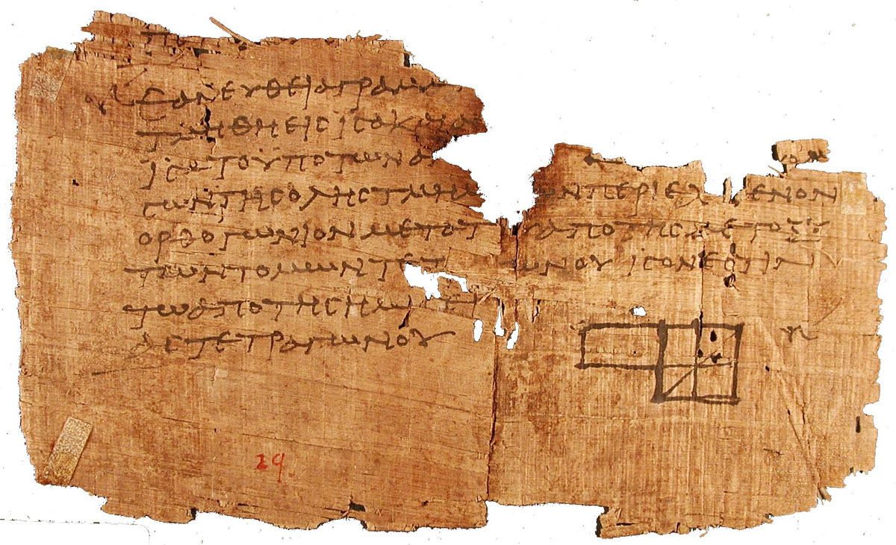

Helenismo
Fuentes Antiguas
Lo que sabemos sobre la filosofía antigua proceden de muy diversos sitios, dado el carácter disperso y fragmentario. Básicamente se pueden clasificar en: obras doctrinales, obras biográficas y sucesiones. De esta división surgen tres formas de presentar la filosofía: por problemas, por autores y por escuelas. Otras fuentes son las recopilaciones, enciclopedias, bibliotecas o los libros de los propios filósofos (que no se detallan en esta sección).

Los principales son:
Doxografías
Una de las fuentes principales son las doxografías. Se llaman así a las obras que tratan sobre las doctrinas y opiniones (doxai) de los filósofos antiguos. El comienzo de esta tradición son los 16 libros de Teofrasto titulados "De las opiniones de los físicos".
Posteriormente siguen otras colecciones de doxografías, entre las que destaca la de Diógenes Laercio, que para nuestro estudio resulta fundamental. “Vidas de los filósofos”, donde de recogen diversos aspectos de sus vidas, biografías, viajes, enseñanzas, anécdotas, etc.
Biografías.
Pueden ser consideradas como una forma de doxografías, pero el interés principal radica en la vida de los filósofos. Se suele considerar como el iniciador de esta modalidad a Aristoxeno de Tarente, discípulo de Aristóteles, pero su figura principal es Calímaco de Cirene.
Recopilaciones
Estas recopilaciones utilizan un procedimiento de ordenación parecido a un diccionario, por letras o números, una de las primeras fue la de Hesiquio de Mileto.
Suda o Suidas
Mencionar también la recopilación de la enciclopedia bizantina llamada "Suda" o "Suidas", escrita en griego alrededor del siglo X. No se sabe con exactitud si por un lexicógrafo llamado "Suda" o es una obra colectiva de varios autores bizantinos.
El libro está ordenado alfabéticamente aunque con ciertas particularidades y comparte el aspecto tanto de un diccionario como de una enciclopedia.
Parece ser que la mayor parte de la obra se perdió durante el saqueo de Constantinopla por los cruzados primero y por los turcos después.
Básicamente se trata de una recopilación de obras de autores anteriores y contiene información muy variada de filosofía, historia, literatura, religión, etc.
La danesa Ada Adler publicó una edición crítica de la Suda en 5 volúmenes (Leipzig, 1928-1938), que sigue siendo la referencia. Hay un proyecto de esta obra en Internet en Suda On Line en: www.stoa.org/sol (hay que darse de alta)
Bibliotecas y Museos
Los centros de la vida cultural fueron las ciudades, repartidas por todo el mundo, desde la India hasta Egipto. La biblioteca y el museo de Alejandría, Pérgamo, en Asia Menor, Antioquía en Siria, Corinto o Rodas.
El museo de Alejandría, la “jaula de las musas”, lo llamaban algunos, y a los que trabajaban allí, “garabateadotes”, porque hacían garabatos sobre rollos de papiro y es que en este tiempo se escribía sobre todo sobre en papiro. Calímaco intentó hacer un catálogo de los libros que contenía la biblioteca y que llegó a ocupar 120 rollos de papiro, tan solo el catálogo, lo que puede dar una idea de la cantidad de rollos que había. La dificultad de ordenarlos y la confusión que reinaba llegó a ser considerable, textos desordenados que por error se atribuían a otro autor, textos de los que no se sabía nada o textos falsos.
La competencia llegó de Pérgamo, otra ciudad empeñada en conseguir una biblioteca mayor que la de Alejandría. Las relaciones con Egipto eran bastante malas y no les vendían papiro, por lo que a los de Pérgamo no les quedó más remedio que usar otro soporte para la escritura. Copiaron y perfeccionaron una técnica oriental de tratamiento de pieles para escribir sobre ellas, de ahí viene el nombre de pergamino. Aunque esta técnica ya se usaba antes, ahora se hacía de forma masiva.
Libros
Sin embargo muchos libros permanecían en manos privadas o en almacenes, sin ningún cuidado, con lo que la humedad, los insectos y las ratas hacían estragos. Al final las destrucciones, los saqueos, los incendios frecuentes en la época y sobre todo el escaso cuidado sobre un material tan delicado y perecedero hicieron que se fuera perdiendo gran parte de las obras originales.
Por eso la importancia fundamental de esos compiladores y copistas posteriores. La mayor parte de los testimonios que poseemos de los griegos, proceden de escritores de varios siglos después.
<- Atrás